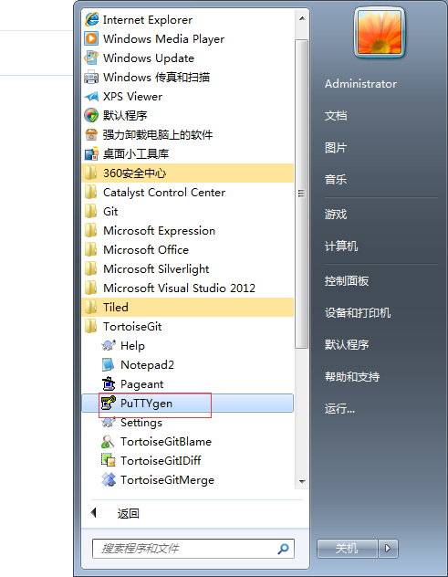
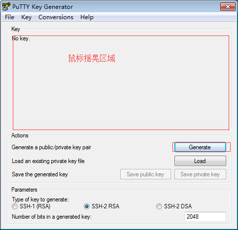
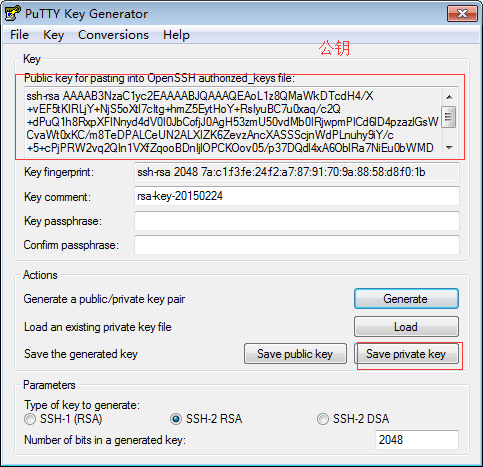
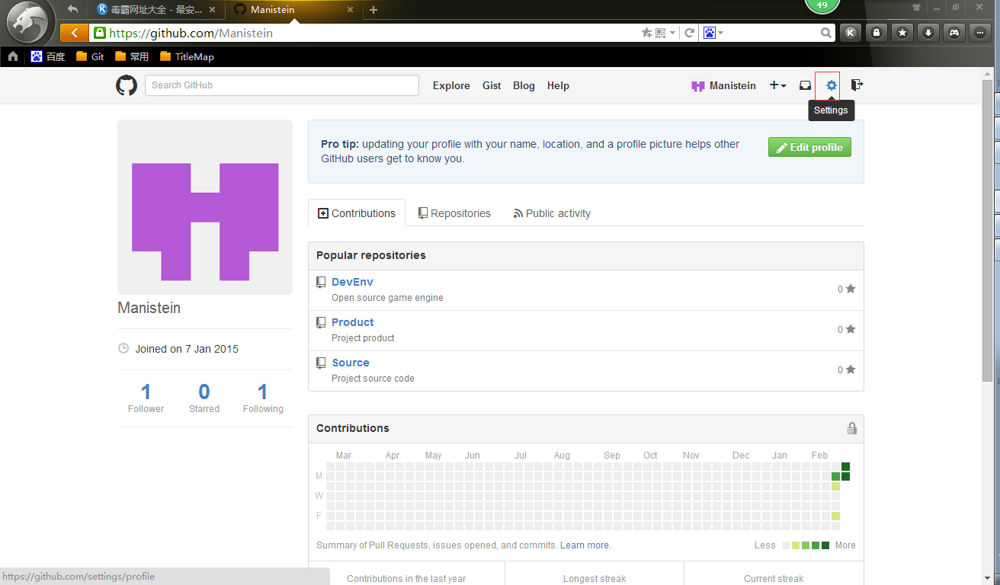
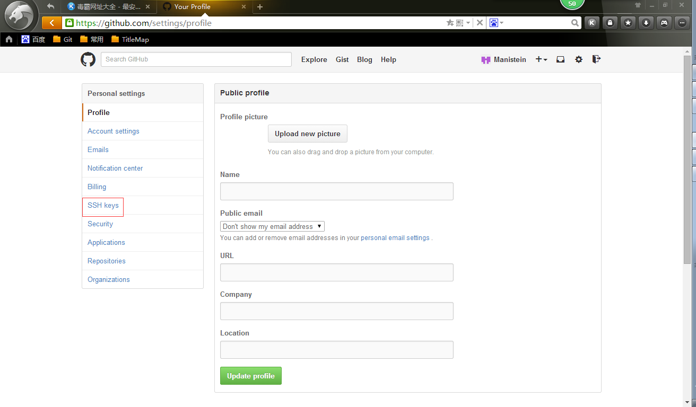
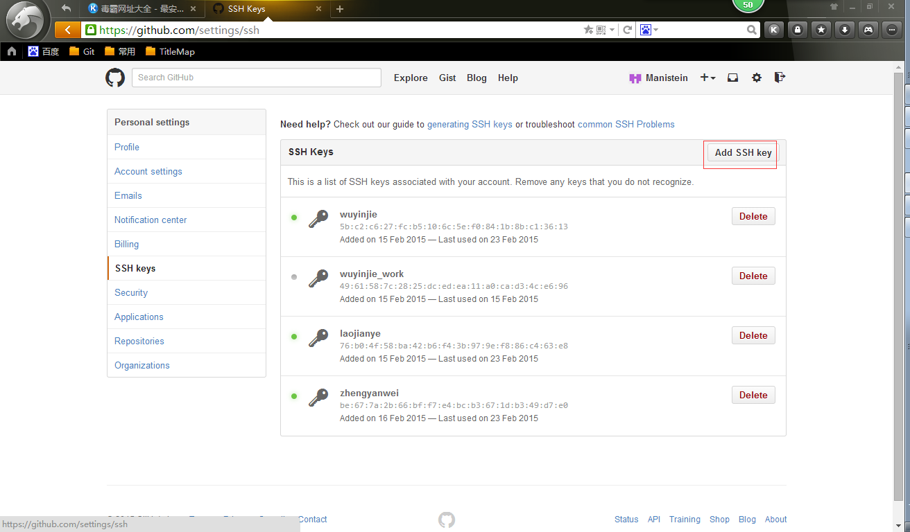
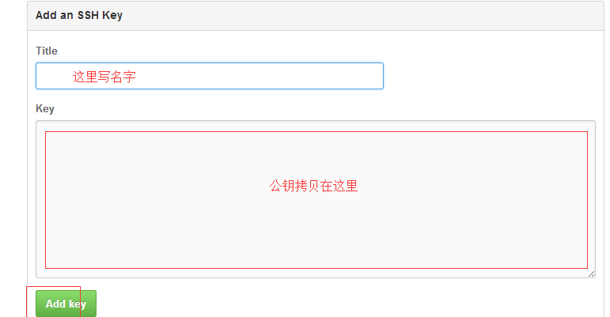
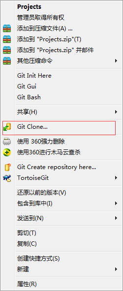
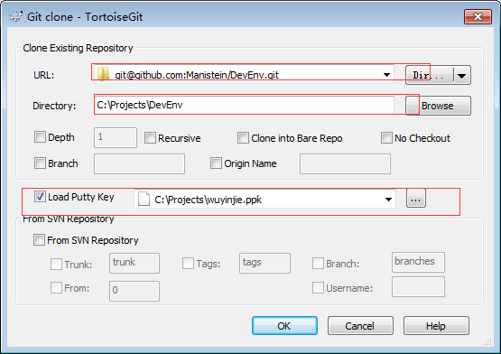

前言
如何在Windows上对Github上的项目进行版本管理，我想TortoiseGit是个非常不错的选择，它极大简化了我们的操作流程，本篇文章将介绍如何实现使用TotoiseGit管理Github上的项目
Git Bash部署
安装Git bash，完成安装后，双击ssh.exe文件，输入：
- git config –global user.name “xxxx”
- git config –global user.email “xxx@xxx”
这里主要是配置入库人名称以及入库人联系方式。
安装TotoiseGit
步骤略
权限配置
生成私钥和公钥
选择PuTTYgen工具，弹出如下界面：
点击Generate按钮，然后在红色框框区域不断摇晃鼠标。
上面的红色框框区域是公钥，私钥需要点击“Save private key”按钮对其进行保存。添加公钥的地方：



clone服务器上的仓库，点击TotoiseGit的clone按钮:
从服务器上克隆仓库。

选择服务器的路径，以及本地要clone的地址，还有私钥。点击ok就可以开始clone了。